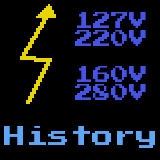
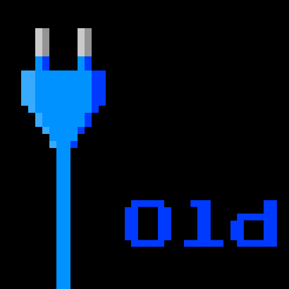
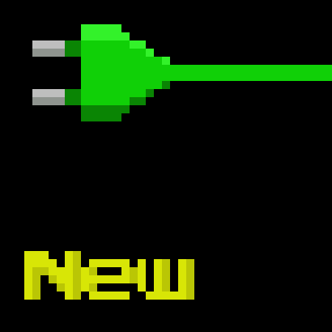
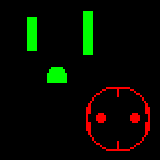

Electrical items
This is my collection of (mostly vintage) electrical items. Most of them are from Italy, because that's where I live, however there are also some items from other countries here as well.
If you want a brief overview of the (surprisingly complicated) Italian electrical system, click on the General information page!
General info:
General information
History:
 History of the Italian electrical system
 Vintage fuseboxes
Vintage fuseboxes
Evolution of safety
Items:
 Vintage rewireable plugs and sockets
 Vintage fixed sockets and lightswitches
Vintage fixed sockets and lightswitches
 Modern plugs and sockets
 Things from other countries
Other pages:
 Travel adaptors
Travel adaptors
Videos and Twitter threads:
- Old plugs, limited electrical supplies, and more [Twitter] [Thread Reader App]
- A brief history of the Swiss T14 plug [Twitter] [Thread Reader App]
- [VIDEO] Weird Old Plugs from Italy, and How They're Built
- [VIDEO] A Brief Look at Italian Modular Power Sockets
External resources:
- The excellent Museum of Plugs and Sockets
- Museum of Old Electrical Items (for UK electrical items)
Thanks for visiting my website!